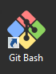

Virtual Machine
This section describes how to get your virtual machine environment up and running on your Windows or Mac OS X laptop or Desktop.
Before proceeding ensure that you have met the prerequisites listed here
Starting a Bash Shell
Mac OS X
The Bash shell on Mac OS X or Terminal can be found in Applications -> Utilities
Windows
From Program Start menu select Git Bash or click on the program icon in the desktop if created during installation:

Downloading the Contents
The virtual machine contents are downloaded from a GitHub repository.
Cloning
Use the git command line tool in a bash shell to clone the contents of the virtual machine from the GitHub Repository. Pay attention and make note of the directory location you are currently in when executing the command below.
Danger!, Will Robinson Do Not Install In Path With Spaces!
$ git clone https://github.com/boundary/tsi-lab
Updating
To get the latest content of labs run the following:
-
Change directory to where you previous cloned the GitHuB repository to your laptop/desktop:
$ cd <your cloned directory -
Run the following command to update with the latest contents:
$ git pull
Creating and Starting the Virtual Machine
Interaction with the APIs requires the following details:
- E-mail - The e-mail associated with your TrueSight Intelligence account.
- API Token - The TrueSight Intelligence API Token
- Application Id - Your application name used for all of the labs (any name you want)
NOTE: To create the virtual machine you need to use a bash shell, or Windows Command prompt.
-
Change to directory of the extracted or cloned the lab contents:
$ cd tsi-lab -
From the bash shell (Terminal in OSX) or (GitBash in Windows). Issue the following command to create the virtual machine:
$ ./vm-create
The above script will prompt for the information that was required:
- API Token
- Application Id
The final screen will show the values of the above as shown here:
Create Virtual Machine:
1) Create Virtual Machine
2) Change E-mail: "randy_knaub@bmc.com"
3) Change API Token: "<api token"
4) Change Application Id: "BigDog"
5) Quit
#?
-
Select item 1 to create the virtual machine.
-
Select items 2-4 to update any information
-
Select item 5 to quit.
NOTE: The details of the create virtual machine are written to vm.log in the directory where you
ran ./vm-create.
Login into the Virtual Machine
After your virtual machine is created login to your virtual machine by using the command below.
$ ./vm-login
Change directory to your labs directory
After you login to your virtual machine change directory to your labs directory by using the command below.
$ cd labs
Validating API credentials in your Virtual Machine
After logging into the virtual machine run the following command to verify your API credentials:
$ creds
TSP_EMAIL=rknaub@gmail.com
TSP_API_HOST=api.truesight-staging.bmc.com
TSP_API_TOKEN=fbecec7a-b0f7-40c4-a4cb-ec09b3b6b7cb
Display your Application Id in your Virtual Machine
$ appid
TSI_APP_ID=BigDog
Virtual Machine Commands
All of the command that follow assume that you are not logged into the virtual machine.
To logout of the virtual machine use the exit command which will return you to
your laptop/desktop.
Stopping the Virtual Machine
Run the following command before shutting down you laptop/desktop.
$ ./vm-stop
Starting the Virtual Machine
Run the following command to restart your virtual machine.
$ ./vm-start
Restarting the Virtual Machine
Run the following command to restart your virtual machine.
$ ./vm-restart
Destroying the Virtual Machine
$ ./vm-remove
Click Next (upper right) when completed.